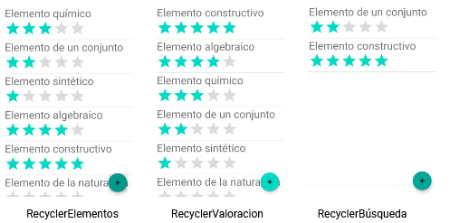

Crea el proyecto
Para este proyecto partiremos de una copia del proyecto RecyclerView.
Clona o descarga: https://github.com/gerardfp/room_template
Puedes añadir ahora las dependencias para la librería Room,
o puedes hacer que el propio Android Studio lo haga después (con Ctrl + Intro)
build.gradle (Module: app)
dependencies {
implementation 'androidx.room:room-runtime:2.2.5'
annotationProcessor 'androidx.room:room-compiler:2.2.5'
}
Room
La librería Room es una capa de acceso a bases de datos SQLite en aplicaciones Android.
Proporciona una forma sencilla de crear y acceder a la base de datos. Utiliza el mapeo objeto-relacional,
que consiste en que cada fila de una tabla de la base de datos corresponde con un objeto en el código Java.
Además está diseñada para integrarse fácilmente con la arquitectura MVVM.
Para usar la librería Room hay que definir 3 componentes:
Database: contiene la referencia a la base de datos.
Entity: representa una tabla de la base de datos.
Dao: contiene los métodos con las consultas para acceder a la base de datos.
Database
Para crear la base de datos se ha de crear una clase que debe:
Ser abstracta
Extender RoomDatabase
Estar anotada con @Database
Incluir la lista de entidades dentro de la anotación @Database
Contener un método abstracto que retorne la clase anotada con @Dao
Dentro de la clase se llama al metodo estático Room.databaseBuilder() para obtener la referencia a la base de datos.
Es conveniente utilizar el patrón singleton,
que asegura que solo habrá una única instancia de la base de datos.
Crea la clase ElementosBaseDeDatos:
ElementosBaseDeDatos.java
import android.content.Context;
import androidx.room.Database;
import androidx.room.Room;
import androidx.room.RoomDatabase;
@Database(entities = {}, version = 1, exportSchema = false)
public abstract class ElementosBaseDeDatos extends RoomDatabase {
private static volatile ElementosBaseDeDatos INSTANCIA;
static ElementosBaseDeDatos obtenerInstancia(final Context context) {
if (INSTANCIA == null) {
synchronized (ElementosBaseDeDatos.class) {
if (INSTANCIA == null) {
INSTANCIA = Room.databaseBuilder(context,
ElementosBaseDeDatos.class, "elementos.db")
.fallbackToDestructiveMigration()
.build();
}
}
}
return INSTANCIA;
}
}
Cuando se llame al método obtenerInstancia(), Room creará la base de datos SQLite (elementos.db), o utilizará la base de datos existente.
La llamada al método .fallbackToDestructiveMigration() hará que en caso de que alteremos el esquema de la base de datos
(añadiendo tablas, campos, etc...), la base de datos se destruya y se vuelva a crear.
También se pueden añadir métodos para proporcionar una migración no destructiva. Ver:
Migrating Room databases
Entity
Las tablas de la base de datos se definen anotando una clase con @Entity. Room creará una tabla en la base de datos por cada
clase anotada con @Entity. Los campos de la tabla corresponderán con los campos de la clase.
En esta app habrá una única tabla para almacenar los Elementos. Para definir la tabla será suficiente con anotar la clase Elemento
con @Entity.
Añadiremos un campo id que anotaremos con @PrimaryKey, que será la clave primaria de la tabla. La propiedad
autoGenerate = true, hará que SQLite asigne el valor automáticamente.
Anota la clase Elemento de la siguiente forma:
Elemento.java
import androidx.room.Entity;
import androidx.room.PrimaryKey;
@Entity
public class Elemento {
@PrimaryKey(autoGenerate = true)
int id;
String nombre;
String descripcion;
float valoracion;
public Elemento(String nombre, String descripcion) {
this.nombre = nombre;
this.descripcion = descripcion;
}
}
Una vez anotadas las entidades, hay que asociarlas con una base de datos.
Añade la entidad Elemento.class a la lista de entities de la base de datos:
ElementosBaseDeDatos.java
@Database(entities = { Elemento.class }, version = 1, exportSchema = false)
public abstract class ElementosBaseDeDatos extends RoomDatabase {
// ...
}
A partir de estas anotaciones Room creará la siguiente tabla en la base de datos:
CREATE TABLE Elemento(id INTEGER PRIMARY KEY, nombre TEXT, descripcion TEXT, valoracion REAL);
Dao
Para acceder a los datos, Room utiliza data access objects, o DAOs.
La clase DAO contiene métodos para acceder a la base de datos (select, insert, update, delete). Cada método está asociado a una consulta SQL.
Room proporciona anotaciones para autogenerar las consultas SQL (@Query, @Insert, @Update, @Delete).
El DAO puede ser un interfaz o una clase abstracta. Room implementará automáticamente los métodos
a partir de las anotaciones, generando las consultas SQL apropiadas.
Puedes crear la clase ElementosDao dentro mismo de la clase ElementosBaseDeDatos (también se podría crear
en un fichero a parte):
ElementosBaseDeDatos.java
public abstract class ElementosBaseDeDatos extends RoomDatabase {
public abstract ElementosDao obtenerElementosDao();
//...
@Dao
interface ElementosDao {
@Query("SELECT * FROM Elemento")
LiveData<List<Elemento>> obtener();
@Insert
void insertar(Elemento elemento);
@Update
void actualizar(Elemento elemento);
@Delete
void eliminar(Elemento elemento);
}
}
-
El método obtener() está anotado con @Query y se especifica la consulta SQL que se debe hacer cuando se llame a este método.
El resultado de la consulta (la lista de elementos List<Elemento>) se retornará como un LiveData. De esta forma
el Array se actualizará cuando cambien los datos de la tabla Elemento, y podemos observarlo desde la Vista para actualizar la Interfaz de usuario
automáticamente. Es decir, no habrá que estar continuamente consultando la base de datos, sino que se observará y ella misma notificará de los cambios.
- Los métodos insertar(), actualizar() y eliminar(), reciben un objeto Elemento como parámetro y Room ejecutará las sentencias
SQL correspondientes automáticamente con los datos de ese Elemento.
El método abstracto obtenerElementosDao() será implementado por Room, y retornará un objeto de
clase ElementosDao con todos los métodos implementados.
Utilizaremos los métodos de este objeto en la app para acceder a la base de datos.
Acceso a la base de datos
Una vez creada la base de datos, definidas las tablas, y los métodos de acceso, ya podemos utilizarla en la app.
En la versión actual de la app los Elementos se guardaban en un ArrayList de la clase ElementosRepositorio.
Modificaremos esta clase para que guarde los Elementos en la base de datos utilizando el ElementosDao.
Pasaremos de esta arquitectura:

A esta:

Empezaremos borrando todas las referencias al ArrayList.
Elimina las líneas resaltadas:
ElementosRepositorio.java
public class ElementosRepositorio {
List<Elemento> elementos = new ArrayList<>();
interface Callback {
void cuandoFinalice(List<Elemento> elementos);
}
ElementosRepositorio(){
elementos.add(new Elemento("Elemento químico", "Es un átomo con moléculas, aquella sustancia que no puede ser descompuesta mediante una reacción química, en otras más simples. Pueden existir dos átomos de un mismo elemento con características distintas y, en el caso de que estos posean número másico distinto, pertenecen al mismo elemento pero en lo que se conoce como uno de sus isótopos."));
elementos.add(new Elemento("Elemento de un conjunto", "En teoría de conjuntos, un elemento o miembro de un conjunto (o familia de conjuntos) es un objeto que forma parte de ese conjunto (o familia)."));
elementos.add(new Elemento("Elemento sintético", "En química, un elemento sintético es un elemento químico que no aparece de forma natural en la Tierra, y solo puede ser creado artificialmente."));
elementos.add(new Elemento("Elemento algebraico", "En matemáticas, más concretamente en álgebra abstracta y teoría de cuerpos, se dice que un elemento es algebraico sobre un cuerpo si es raíz de algún polinomio con coeficientes en dicho cuerpo. Los elementos algebraicos sobre el cuerpo de los números racionales reciben el nombre de números algebraicos."));
elementos.add(new Elemento("Elementos de la naturaleza","Los cuatro o cinco elementos de la naturaleza —normalmente agua, tierra, fuego y aire, a los que se añade la quintaesencia o éter— eran, para muchas doctrinas antiguas, los constituyentes básicos de la materia y explicaban el comportamiento de la naturaleza. El modelo estuvo vigente hasta que la ciencia moderna empezó a desentrañar los elementos y reacciones químicas."));
elementos.add(new Elemento("Elemento constructivo","Un elemento constructivo es cada uno de los componentes materiales que integran una obra de construcción. Se suelen clasificar en estructurales y compartimentadores."));
}
List<Elemento> obtener() {
return elementos;
}
void insertar(Elemento elemento, Callback callback){
elementos.add(elemento);
callback.cuandoFinalice(elementos);
}
void eliminar(Elemento elemento, Callback callback) {
elementos.remove(elemento);
callback.cuandoFinalice(elementos);
}
void actualizar(Elemento elemento, float valoracion, Callback callback) {
elemento.valoracion = valoracion;
callback.cuandoFinalice(elementos);
}
}
Por su parte, el ElementosViewModel accedía directamente al ArrayList de Elementos.
Ahora que ya no existe el Array debemos borrar dicha referencia.
Elimina la siguiente línea:
ElementosViewModel.java
public class ElementosViewModel extends AndroidViewModel {
public ElementosViewModel(@NonNull Application application) {
// ...
listaElementos.setValue(elementosRepositorio.obtener());
}
//...
}
Obtener el ElementosDao
La clase ElementosRepositorio necesitará un objeto ElementosDao para poder ejecutar los métodos obtener(), insertar(),
actualizar() y eliminar().
Para obtener el ElementosDao se debe obtener la instancia de la base de datos con ElementosDatabase.obtenerInstancia(),
y llamar al método obtenerElementosDao().
Para llamar al método ElementosDatabase.obtenerInstancia() se necesita el parámetro Application, así que lo añadimos al constructor
de la clase ElementosRepositorio.
ElementosRepositorio.java
public class ElementosRepositorio {
ElementosBaseDeDatos.ElementosDao elementosDao;
ElementosRepositorio(Application application){
elementosDao = ElementosBaseDeDatos.obtenerInstancia(application).obtenerElementosDao();
}
// ...
}
Por su parte, el ElementosViewModel deberá pasar la referencia a Application cuando instancia el
repositorio:
ElementosViewModel.java
public class ElementosViewModel extends AndroidViewModel {
public ElementosViewModel(@NonNull Application application) {
// ...
elementosRepositorio = new ElementosRepositorio(application);
}
//...
}
Query
Para consultar los Elementos de la base de datos, el repositorio únicamente debe llamar al método obtener()
del DAO. El DAO retorna el resultado de la consulta como un LiveData. Este LiveData se irá actualizando permanentemente
según vaya cambiando el contenido de la base de datos.
Será suficiente con que el Repositorio retorne este LiveData para que pueda ser observado por la Vista.
ElementosRepositorio.java
public class ElementosRepositorio {
// ...
LiveData<List<Elemento>> obtener(){
return elementosDao.obtener();
}
}
El ViewModel transmite directamente el objeto LiveData a la Vista:
ElementosViewModel.java
public class ElementosViewModel extends AndroidViewModel {
// ...
LiveData<List<Elemento>> obtener(){
return elementosRepositorio.obtener();
}
}
Insert, Update, Delete
Las operaciones que modifican la base de datos se deben hacer en una tarea en segundo plano.
Para ello creamos un objeto Executor en el repositorio:
ElementosRepositorio.java
public class ElementosRepositorio {
Executor executor = Executors.newSingleThreadExecutor();
//...
}
Los métodos del Repositorio ejecutan las consultas correspondientes del DAO en segundo plano para no
bloquear el Thread Principal:
ElementosRepositorio.java
public class ElementosRepositorio {
//...
void insertar(Elemento elemento){
executor.execute(new Runnable() {
@Override
public void run() {
elementosDao.insertar(elemento);
}
});
}
void eliminar(Elemento elemento) {
executor.execute(new Runnable() {
@Override
public void run() {
elementosDao.eliminar(elemento);
}
});
}
public void actualizar(Elemento elemento, float valoracion) {
executor.execute(new Runnable() {
@Override
public void run() {
elemento.valoracion = valoracion;
elementosDao.actualizar(elemento);
}
});
}
}
Debido a que estos cambios sobre los datos se reflejarán automáticamente en el LiveData de la consulta SELECT,
ya no es necesario el callback para retornar la lista resultante.
De esta forma el ViewModel se simplifica bastante, ya que no es necesario que mantenga el LiveData actualizado, sino
que será el propio Room el que lo vaya actualizando.
ElementosViewModel.java
public class ElementosViewModel extends AndroidViewModel {
//...
void insertar(Elemento elemento){
elementosRepositorio.insertar(elemento);
}
void eliminar(Elemento elemento){
elementosRepositorio.eliminar(elemento);
}
void actualizar(Elemento elemento, float valoracion){
elementosRepositorio.actualizar(elemento, valoracion);
}
}
Por último, solamente queda limpiar el código que queda sin utilizar:
Elimina estas líneas:
ElementosViewModel.java
public class ElementosViewModel extends AndroidViewModel {
MutableLiveData<List<Elemento>> listElementosMutableLiveData = new MutableLiveData<>();
}
ElementosRepositorio.java
public class ElementosRepositorio {
interface Callback {
void cuandoFinalice(List<Elemento> elementos);
}
}
Ahora puedes ejecutar la app y los datos ya se guardan en la base de datos.
Observa que no ha sido necesario tocar el código de la Vista (fragments) para implementar los cambios
en el Modelo.
Más Valorados y Búsqueda
Añadiremos un par de Pantallas a la app:
Añadiremos también un BottomNavigationView para navegar a estas pantallas, y un SearchView para introducir el término.
Pantallas y navegación
Las pantallas RecyclerValoracionFragment y RecyclerBusquedaFrgment, són en realidad iguales que la pantalla
que ya tenemos RecyclerValoracionFragment. Lo único que cambia en ellas es la consulta SQL que se debe realizar.

Para crearlos podríamos copiar&pegar el
fragment RecyclerElementosFragment y cambiar la llamada a obtener() por las llamadas a másValorados()
y buscar(). Sin embargo, podemos hacer uso de la herencia y extender el RecyclerElementosFragment.
Es decir, los fragments de valoración y búsqueda aprovecharán el código Java y el layout XML del
fragment RecyclerElementosFragment
De esta forma, para crear los dos fragments únicamente necesitamos una clase Java que extienda de
RecyclerElementosFragment.
Crea estas dos clases Java:
RecyclerValoracionFragment.java
public class RecyclerValoracionFragment extends RecyclerElementosFragment {
}
RecyclerBusquedaFragment.java
public class RecyclerValoracionFragment extends RecyclerElementosFragment {
}
NavGraph
Ahora hay que añadir estos dos fragments al nav_graph.xml. Y también modificar
las acciones de navegación, ya que a los fragments MostrarElemento y NuevoElemento
también se podrá acceder ahora desde las pantallas de valoración y búsqueda.
En lugar de triplicar las flechas de navegación, usaremos acciones globales:


El nav_graph quedará así:
nav_graph.xml
<?xml version="1.0" encoding="utf-8"?>
<navigation xmlns:android="http://schemas.android.com/apk/res/android"
xmlns:app="http://schemas.android.com/apk/res-auto"
xmlns:tools="http://schemas.android.com/tools"
android:id="@+id/nav_graph"
app:startDestination="@id/recyclerElementosFragment">
<fragment
android:id="@+id/recyclerElementosFragment"
android:name="com.company.room.RecyclerElementosFragment"
android:label="fragment_recycler_elementos"
tools:layout="@layout/fragment_recycler_elementos" />
<fragment
android:id="@+id/recyclerValoracionFragment"
android:name="com.company.room.RecyclerValoracionFragment"
android:label="RecyclerValoracionFragment"
tools:layout="@layout/fragment_recycler_elementos" />
<fragment
android:id="@+id/recyclerBuscarFragment"
android:name="com.company.room.RecyclerBuscarFragment"
android:label="RecyclerBuscarFragment"
tools:layout="@layout/fragment_recycler_elementos" />
<action
android:id="@+id/action_mostrarElementoFragment"
app:destination="@id/mostrarElementoFragment" />
<action
android:id="@+id/action_nuevoElementoFragment"
app:destination="@id/nuevoElementoFragment" />
<fragment
android:id="@+id/nuevoElementoFragment"
android:name="com.company.room.NuevoElementoFragment"
android:label="fragment_nuevo_elementok"
tools:layout="@layout/fragment_nuevo_elemento" />
<fragment
android:id="@+id/mostrarElementoFragment"
android:name="com.company.room.MostrarElementoFragment"
android:label="fragment_mostrar_elemento"
tools:layout="@layout/fragment_mostrar_elemento" />
</navigation>
También hay que cambiar las referencias a las acciones de navegación que tenemos puestas en el código Java:
RecyclerElementosFragment.java
- navController.navigate(R.id.action_recyclerElementosFragment_to_nuevoElementoFragment);
+ navController.navigate(R.id.action_nuevoElementoFragment);
// ...
- navController.navigate(R.id.action_recyclerElementosFragment_to_mostrarElementoFragment);
+ navController.navigate(R.id.action_mostrarElementoFragment);
MainActivity
Navegaremos a estas pantallas usando un BottomNavigationView, que añadimos en la MainActivity.
También añadimos el SearchView que permita introducir el término de búsqueda:
activity_main.xml
<?xml version="1.0" encoding="utf-8"?>
<androidx.constraintlayout.widget.ConstraintLayout
xmlns:android="http://schemas.android.com/apk/res/android"
xmlns:app="http://schemas.android.com/apk/res-auto"
android:layout_width="match_parent"
android:layout_height="match_parent">
<androidx.appcompat.widget.SearchView
android:id="@+id/searchView"
android:layout_width="match_parent"
android:layout_height="wrap_content"
app:layout_constraintTop_toTopOf="parent"
app:layout_constraintBottom_toTopOf="@id/fragment"
app:layout_constraintLeft_toLeftOf="parent"
app:layout_constraintRight_toRightOf="parent"/>
<androidx.fragment.app.FragmentContainerView
android:id="@+id/fragment"
android:name="androidx.navigation.fragment.NavHostFragment"
android:layout_width="match_parent"
android:layout_height="0dp"
app:defaultNavHost="true"
app:navGraph="@navigation/nav_graph"
app:layout_constraintTop_toBottomOf="@id/searchView"
app:layout_constraintBottom_toTopOf="@id/bottom_nav_view"
app:layout_constraintLeft_toLeftOf="parent"
app:layout_constraintRight_toRightOf="parent"/>
<com.google.android.material.bottomnavigation.BottomNavigationView
android:id="@+id/bottom_nav_view"
android:layout_width="0dp"
android:layout_height="wrap_content"
app:menu="@menu/bottom_menu"
app:labelVisibilityMode="unlabeled"
app:layout_constraintTop_toBottomOf="@id/fragment"
app:layout_constraintBottom_toBottomOf="parent"
app:layout_constraintLeft_toLeftOf="parent"
app:layout_constraintRight_toRightOf="parent"/>
</androidx.constraintlayout.widget.ConstraintLayout>
Creamos el fichero de menú bottom_menu.xml, con los ítems para navegar a las pantallas:
res/menu/bottom_menu.xml
<?xml version="1.0" encoding="utf-8"?>
<menu xmlns:android="http://schemas.android.com/apk/res/android">
<item
android:id="@+id/recyclerElementosFragment"
android:icon="@android:drawable/ic_input_get"
android:title="Elementos" />
<item
android:id="@+id/recyclerValoracionFragment"
android:icon="@android:drawable/btn_star_big_on"
android:title="Valoración" />
<item
android:id="@+id/recyclerBuscarFragment"
android:icon="@android:drawable/ic_menu_search"
android:title="Buscar" />
</menu>
También configuramos la navegación en la MainActivity:
MainActivity.java
@Override
protected void onCreate(Bundle savedInstanceState) {
// ...
NavController navController = ((NavHostFragment) getSupportFragmentManager().findFragmentById(R.id.fragment)).getNavController();
NavigationUI.setupWithNavController(binding.bottomNavView, navController);
}
La navegación de la app queda así:

La MainActivity tiene el SearchView, el NavHost y el BottomNavigationView.
No obstante, no en todos los fragments queremos mostrar el BottomNavigationView. Cuando se navegue a los
fragments de Mostrar y Nuevo no queremos que se muestre.
Y el SearchView únicamente lo queremos mostrar cuando se navegue a la pantalla de buscar.
Los componentes del la MainActivity que queremos mostrar ocultar, los podemos gestionar en el callback
onDestinationChanged(). Este callback es ejecutado cada vez que se navega a un destino, y se
pasa como parámetro el destino al cual se ha navegado. Aprovecharemos para mostrar/ocultar el BottomNavigationView
y el SearchView en las pantallas que deseamos:
MainActivity.java
@Override
protected void onCreate(Bundle savedInstanceState) {
// ...
navController.addOnDestinationChangedListener(new NavController.OnDestinationChangedListener() {
@Override
public void onDestinationChanged(@NonNull NavController controller,
@NonNull NavDestination destination, @Nullable Bundle arguments) {
if (destination.getId() == R.id.nuevoElementoFragment
|| destination.getId() == R.id.mostrarElementoFragment) {
binding.bottomNavView.setVisibility(View.GONE);
} else {
binding.bottomNavView.setVisibility(View.VISIBLE);
}
if (destination.getId() == R.id.recyclerBuscarFragment){
binding.searchView.setVisibility(View.VISIBLE);
binding.searchView.setIconified(false);
binding.searchView.requestFocusFromTouch();
} else {
binding.searchView.setVisibility(View.GONE);
}
}
});
}
Ahora ya tenemos implementada la navegación a las diferentes pantallas de al app. El siguiente paso es
implementar la funcionalidades "más valorados" y "búsqueda".
Model
Añadiremos al ElementosDao las consultas correspondientes a "más valorados" y "búsqueda":
ElementosBaseDeDatos.java
@Dao
interface ElementosDao {
// ...
@Query("SELECT * FROM Elemento ORDER BY valoracion DESC")
LiveData<List<Elemento>> masValorados();
@Query("SELECT * FROM Elemento WHERE nombre LIKE '%' || :d || '%'")
LiveData<List<Elemento>> buscar(String d);
}
Para añadir un parámetro a una consulta, ha que poner el nombre del parámetro precedido de dos puntos :
(ver: query-params).
El operador || es el operador de concatenación SQL.
Estas consultas serán llamadas por el repositorio:
ElementosRepositorio.java
public class ElementosRepositorio {
// ...
LiveData<List<Elemento>> masValorados() {
return elementosDao.masValorados();
}
LiveData<List<Elemento>> buscar(String d) {
return elementosDao.buscar(d);
}
}
ViewModel
El ViewModel expondrá a la Vista el acceso a los métodos masValorados() y busqueda().
El método masValorados() no tiene nada en especial, simplemente retorna el resultado de la consulta:
ElementosViewModel.java
public class ElementosViewModel extends AndroidViewModel {
// ...
LiveData<List<Elemento>> masValorados(){
return elementosRepositorio.masValorados();
}
}
El método busqueda(), sin embargo, tiene que pasar como parámetro el termino de busqueda introducido en el
SearchView que hemos puesto en la MainActivity.
Crearemos una variable terminoBusqueda que guardará el texto introducido en el SearchView.
Crearemos esta variable como MutableLiveData y usaremos Transformations para observar los cambios
en el término de busqueda y transformarlo en la consulta correspondiente. También añadiremos un método para
establecer el terminoBusqueda.
ElementosViewModel.java
public class ElementosViewModel extends AndroidViewModel {
// ...
MutableLiveData<String> terminoBusqueda = new MutableLiveData<>();
// ...
LiveData<List<Elemento>> buscar(){
return Transformations.switchMap(terminoBusqueda, new Function<String, LiveData<List<Elemento>>>() {
@Override
public LiveData<List<Elemento>> apply(String input) {
return elementosRepositorio.buscar(input);
}
});
}
void establecerTerminoBusqueda(String s){
terminoBusqueda.setValue(s);
}
}
View
Establecemos un listener al SearchView en la MainActivity para detectar los cambios en el texto
introducido. Cuando se produzca algún cambio actualizaremos el terminoBusqueda en el ViewModel (automáticamente se
ejecutará la Transformación y se llamará a la consulta).
MainActivity.java
@Override
protected void onCreate(Bundle savedInstanceState) {
// ...
binding.searchView.setOnQueryTextListener(new SearchView.OnQueryTextListener() {
@Override
public boolean onQueryTextSubmit(String query) { return false; }
@Override
public boolean onQueryTextChange(String newText) {
elementosViewModel.establecerTerminoBusqueda(newText);
return false;
}
});
}
Ya solo queda hacer que los fragments Valorados y Buscar, obtengan los datos correspondientes del ViewModel.
Para ello, lo único que hay que cambiar respecto al RecyclerElementosFragment es la llamada al método
obtener() del ViewModel, y sustiturirla por las llamadas a másValorados() y buscar().
Es esta llamada la que se debe anular/sobreescribir (@Override) en los fragments Valorados y Buscar.
Haremos un método en el RecyclerElementosFragment que realice esta llamada y que sobreescriban los otros dos
fragments con sus llamadas correspondientes.
RecyclerElementosFragment.java
public class RecyclerElementosFragment extends Fragment {
// ...
@Override
public void onViewCreated(@NonNull View view, @Nullable Bundle savedInstanceState) {
- elementosViewModel.obtener().observe(getViewLifecycleOwner(), new Observer<List<Elemento>>() {
+ obtenerElementos().observe(getViewLifecycleOwner(), new Observer<List<Elemento>>() {
@Override
public void onChanged(List<Elemento> elementos) {
elementosAdapter.establecerLista(elementos);
}
});
}
LiveData<List<Elemento>> obtenerElementos(){
return elementosViewModel.obtener();
}
}
RecyclerBuscarFragment.java
public class RecyclerBuscarFragment extends RecyclerElementosFragment {
@Override
LiveData<List<Elemento>> obtenerElementos() {
return elementosViewModel.buscar();
}
}
RecyclerValoracionFragment.java
public class RecyclerValoracionFragment extends RecyclerElementosFragment {
@Override
LiveData<List<Elemento>> obtenerElementos() {
return elementosViewModel.masValorados();
}
}